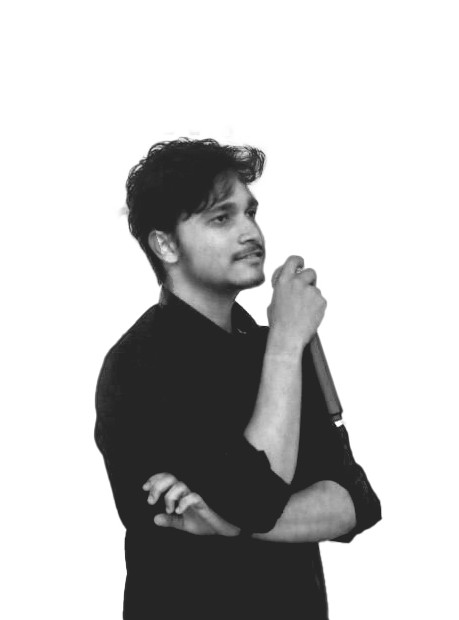

ARTIFICIAL INTELLIGENCE
MACHINE LEARNING

Adarsh Nayak is a Computer Science undergraduate specializing in Artificial Intelligence & Machine Learning at C.V. Raman Global University. With a strong foundation in cloud computing, web development, and robotics, he is passionate about leveraging technology to solve real-world problems. His expertise spans multiple domains, including Python, C++, Java, JavaScript, and AI/ML frameworks, allowing him to build innovative and scalable solut Adarsh has actively participated in several national and international competitions, showcasing his leadership and technical skills. He was a finalist in the Smart India Hackathon (SIH), where he developed an ML-based mobile app for Direct Market Access for Farmers. His passion for cloud technologies led him to become a Core Member for Cloud Management in GDG on Campus, contributing to cloud-related initiatives and workshops. He has also successfully completed a Summer Internship at Silicon University, where he worked extensively with Django and Python to build dynamic web applications. His participation in the Accenture Innovation Challenge Bootcamp demonstrated his problem-solving abilities and innovative thin Beyond technical expertise, Adarsh has led multiple projects, including a Travel Management System in Python and a Django-based Travel Planning Website. His leadership skills extend to hackathons, university events, and tech clubs, where he actively mentors and collaborates with peers.With certifications in Google Cloud (GEN AI Study Jam, GDSC) and experience in AI, ML, cloud computing, IoT, and full-stack development, Adarsh aims to push the boundaries of technology. He is driven by a vision to excel in cloud computing, AI-driven automation, and large-scale application development, striving to make a meaningful impact in the tech industry.Adarsh Nayak recently participated in the Green AI Event at IIT, a prestigious initiative focused on sustainable and energy-efficient artificial intelligence solutions. This event brought together researchers, industry experts, and AI enthusiasts to discuss and develop eco-friendly AI models that reduce computational costs and carbon footprints.During the event, Adarsh collaborated with like-minded professionals to explore energy-efficient ML algorithms, AI optimization techniques, and cloud-based sustainability solutions. His participation reinforced his commitment to responsible AI development, aligning with his passion for cloud computing and AI-driven automation.This experience further enhanced his expertise in scalable and sustainable AI models, equipping him with the knowledge to create efficient AI-powered applications that balance performance and environmental impact. His insights from the Green AI Event at IIT contribute to his mission of pioneering cutting-edge, sustainable technology solutions in the field of artificial intelligence.